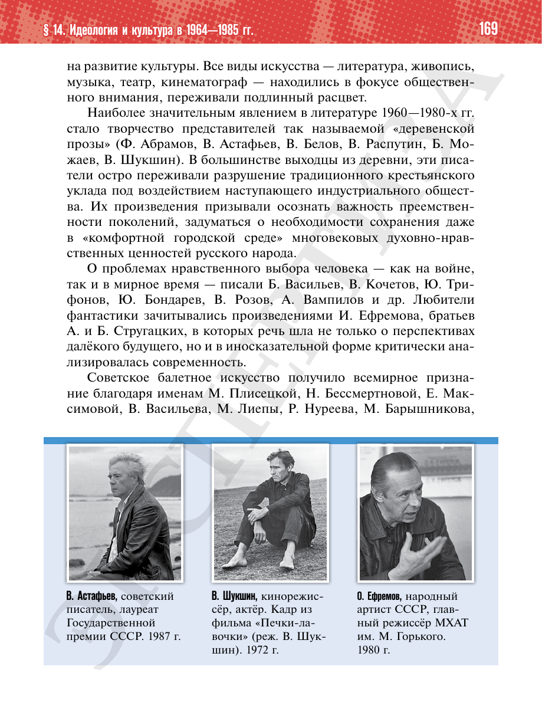

⌂
Мединский.нет
Последнее обновление: 21.08.2026
Мединский.нет
›
История России. 11 класс. Базовый уровень
›
Глава I. СССР в 1945—1991 гг.
›
§ 14. Идеология и культура в 1964—1985 гг.
›
стр. 169

← стр. 168
Оглавление
стр. 170 →
×